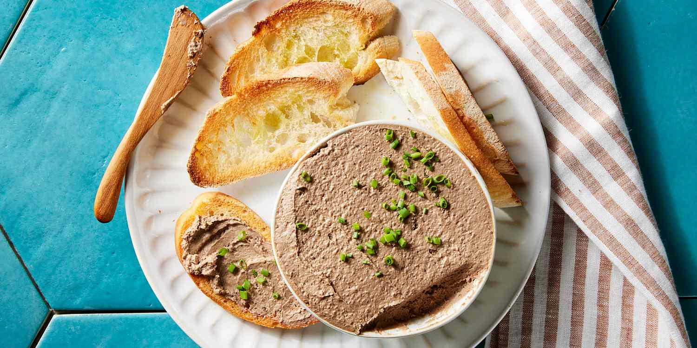

Home
Duck Liver Parfait

Description
Duck Liver Parfait is a smooth, rich, and luxurious appetizer, perfect for a special meal or festive occasion. Its creamy texture and bold flavors make it an unforgettable starter.
Use it as a spread on a piece of toast / bread and serve it along with these sophisticated brandied pears or Amaretto cherries. The fruit cuts through the rich and fatty texture of the duck liver.
It’s no secret that duck liver parfait is a delicacy. In fact, you can find it being served as a starter all around France with a piece of baguette. Understandably, who could resist a little taste of velvety duck liver parfait? This parfait recipe is not only delicious, but easy to make.
Ingredients
- 600g duck or chicken liver or a mix of both
- 250g pack butter diced and slightly softened
- 2 shallots finely sliced
- 1 garlic clove sliced
- Splash each brandy or port
- 1 tbsp tomato purée
For the topping
- 100g butter
- 1 tbsp thyme leaves
- 1 tsp black peppercorn
- Toast, gherkin and chutney, to serve
Steps
- Cut away and discard any large sinews from the livers, then set the livers aside.
- Heat about a third of the butter in a large frying pan, then gently fry the shallots and garlic for 3-4 mins gitil soft.
- Turn up the heat, add the livers, then fry until just browned on all sides. Add the brandy and port, boil down as quickly as possible – if the sauce catches light for an instant, then all the better.
- Remove the pan from the heat and leave to cool completely.
- Season the livers generously, then tip the contents of the pan into a food processor with the tomato purée and remaining butter, and blitz until smooth.
- Push the mixture through a fine sieve into a bowl, taste for seasoning, then tip into a serving dish, banging the dish down on the tabletop to smooth out the surface. Place in the fridge to set.
- Once the mixture has set, make the topping. Gently melt the butter in a small pan or in a bowl in the microwave, then leave for a min to settle and separate.
- Pour the yellow butter that has risen to the top into another bowl and discard the milky liquid. Leave the yellow butter to cool slightly, then mix in the thyme and peppercorns.
- Pour the mixture over the parfait and leave to set in the fridge. Serve with plenty of toast, sliced gherkins and chutney. Will keep for 2 days in the fridge.